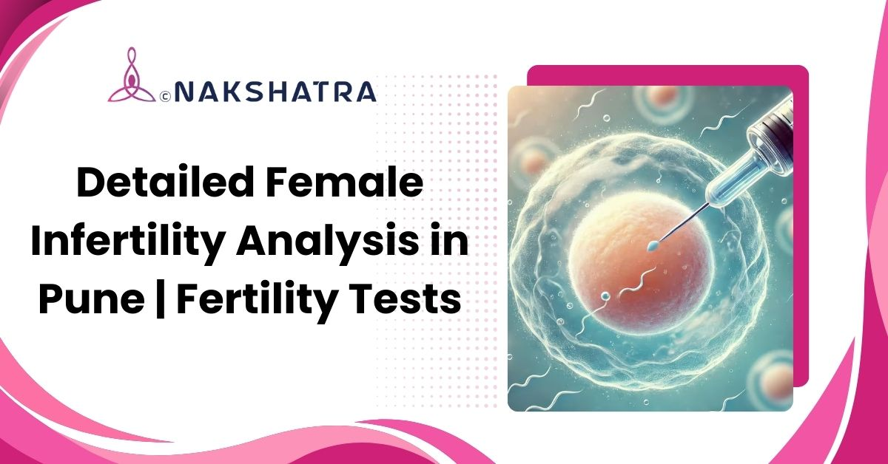

Ovarian reserve testing
AMH, FSH, and antral follicle count support fertility planning.
Comprehensive fertility testing in Baner, Pune to understand hormonal balance, ovulation, ovarian reserve, tubal health, and uterine factors before planning treatment.

AMH, FSH, and antral follicle count support fertility planning.
Cycle tracking and ultrasound help evaluate reproductive health.
Findings are used to plan the next safe fertility step.

Struggling to conceive can be emotionally and physically overwhelming, but understanding the reason is the first step toward finding a solution. At Nakshatra Clinic in Baner, Pune, we offer comprehensive female infertility analysis and advanced fertility testing to identify the underlying causes of conception challenges.
Our experienced fertility specialists in Baner, Pune use the latest diagnostic methods to assess hormonal balance, ovulation, and reproductive health. With personalized treatment plans, modern diagnostic technology, and compassionate care, we help women move closer to their dream of motherhood.
These are the original diagnostic areas from the page, presented as clearer cards while preserving the same clinical meaning.
This test evaluates the number and quality of eggs remaining in the ovaries. Blood tests like AMH (Anti-Mullerian Hormone) and FSH, along with an Antral Follicle Count (AFC) through ultrasound, help assess fertility potential and guide treatment planning.
Ovulation monitoring helps determine whether an egg is being released regularly. Through serial ultrasounds, our specialists track follicle growth and identify the best time for conception or IUI. It is especially helpful for women with irregular cycles, PCOS, or unexplained infertility.
Hormonal tests check levels of LH, FSH, TSH, Prolactin, and Estradiol. These tests detect imbalances that may affect ovulation, thyroid function, or menstrual regularity. Proper hormone balance is essential for successful conception and pregnancy.
Hysterosalpingography (HSG) and Sonosalpingography (SSG) check if your fallopian tubes are open or blocked. These imaging tests use contrast or saline infusion to visualize the uterus and tubes, ensuring healthy pathways for fertilization and embryo implantation.
A transvaginal ultrasound gives a clear view of the uterus, ovaries, and endometrium. It helps detect cysts, fibroids, or abnormalities that can interfere with conception. This painless test is vital for accurate diagnosis and fertility treatment planning.
This test identifies uterine conditions such as polyps, fibroids, or adhesions that affect implantation. At Nakshatra Clinic, our specialists use advanced 3D ultrasound and hysteroscopy to diagnose and treat these issues, improving embryo implantation success.
Thyroid disorders and high prolactin levels often cause infertility or irregular ovulation. We perform TSH and Prolactin tests to assess endocrine balance. Early correction of these hormones restores menstrual health and boosts natural conception chances.
For couples with recurrent IVF failures or miscarriages, genetic testing and immunological screening help uncover hidden causes like chromosomal abnormalities or immune reactions. These insights allow tailored fertility treatments and improved pregnancy outcomes.
When non-invasive tests are inconclusive, laparoscopy helps visualize the uterus, ovaries, and tubes directly. It is useful for diagnosing endometriosis, cysts, or adhesions, offering both diagnosis and corrective treatment in one minimally invasive procedure.
Male factors contribute to almost half of infertility cases. We provide advanced semen analysis to evaluate sperm count, motility, and morphology. This ensures a complete fertility assessment for both partners, supporting accurate diagnosis and effective treatment planning.
Our ERA test in Baner, Pune helps determine the optimal time for embryo transfer in IVF. By analyzing endometrial gene expression, it identifies your personalized implantation window, significantly increasing the success rate of IVF cycles.
Nakshatra Clinic offers complete fertility evaluation packages combining essential hormonal, ultrasound, and genetic tests for women and men. These all-inclusive assessments save time, reduce costs, and deliver a holistic view of reproductive health.
The findings from hormonal, ultrasound, tubal, uterine, genetic, and partner evaluation help your fertility specialist decide the next appropriate step.
Testing looks for thyroid, prolactin, ovulation, and cycle-related factors that may affect conception.
AMH, FSH, and AFC results help estimate egg reserve and guide treatment conversations.
Imaging checks the uterine cavity and tubal pathways for factors that can affect fertilization or implantation.
Partner semen analysis is included when needed because complete fertility assessment considers both partners.
A female infertility analysis is a series of tests and evaluations that help identify the reason behind a woman's inability to conceive naturally. It includes hormone testing, ovarian reserve assessment, ultrasound scans, and tubal patency checks to detect conditions like PCOS, thyroid imbalance, or uterine abnormalities.
You should consider testing if:
Most basic fertility tests take a few days to a week. Blood test results are typically available within 48 hours, while imaging and hormonal cycle tracking may take longer depending on menstrual timing. Nakshatra Clinic ensures a fast and smooth diagnostic experience.
An ovarian reserve test measures the number and quality of eggs left in a woman's ovaries using AMH levels and antral follicle count. It helps predict fertility potential and guides treatment options like IVF or egg freezing, especially for women over 30.
Some of the common causes include:
Most fertility tests, including ultrasounds and blood tests, are non-invasive and painless. Some procedures like HSG or laparoscopy may cause mild discomfort but are performed under medical supervision at Nakshatra Clinic, Baner, Pune for safety and care.
Modern fertility testing methods like hormone panels, ovarian reserve assessments, and ultrasound imaging offer over 95% accuracy in detecting causes of infertility. Nakshatra Clinic's advanced diagnostic tools ensure precise and reliable results.
Book a consultation at Nakshatra Clinic in Baner, Pune to review symptoms, cycle history, test options, and the next appropriate fertility step.